龍照寺/長崎県南島原市
長崎県の島原半島。
数多くの小国が割拠していた島原半島だが久々に訪れたら島原市、雲仙市、南島原市の3市に統合されていて、現代版三国志みたいになっちゃってました。
で、南島原市。
といっても全くピンと来ないのだが、読んで字の如く島原半島の南部である。
で、そんな南島原市にデカイ不動サマがおわす。
場所は島原市の近く、旧深江町である。
深江町といえば雲仙大噴火の際に大変な被害を受けたところである。
当時、ヒゲを剃らずに奔走しておられた町長を覚えておいでであろう。
そんな深江の大不動明王像は龍照寺というお寺にいらっしゃる。
門を潜るとドーン！
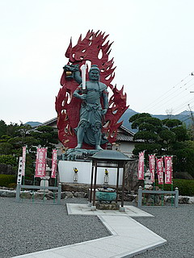 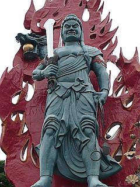
巨大な不動サマが屹立している。
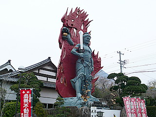
高さは13.8メートル。実際には真っ赤なファイヤーを背にしているので総高さは更に数メートル足す事になる。
ええと確か「日本一の不動様」みたいな看板があったように記憶しているが、まあ、見なかったことにしましょう。
不動サマの後ろにチョロっと見えるのが多分普賢岳。
普賢岳噴火の際には道が閉鎖され火山灰も積もったのでお寺自体は一時避難していたという。
その間、無人の境内でひたすら火山灰を被り、恐らくモノトーンになってしまったであろう不動サマの心中はいかばかりであっただろう。
人間の厄だけでなく自然の災厄までをも被り続けた不動サマだったのだ。
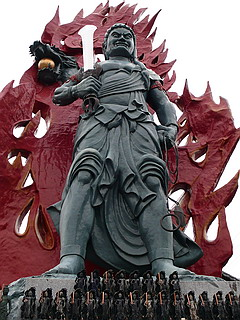 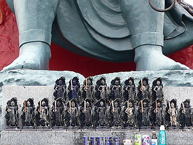
足元にはミニ不動。
まあ、正直申し上げてこのサイズの不動明王像は滅多にないが、かといって死ぬほどビックリする大きさか、と言われれば微妙なトコロではある。しかしファイヤーの勢いや不動像のリアルな恐さ、何よりも噴火した普賢岳と対峙するロケーション、といった点で軍配を上げざるを得ないだろう。
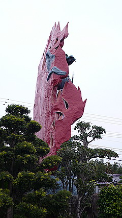 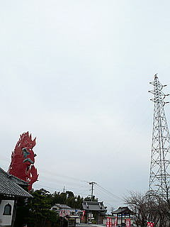
不動サマの火がどこか普賢岳の噴火のシーンとシンクロしてくるような気がした。
地元の方からは「普段厄除けだ何だ言ってる割にはとっとと逃げた」との声も聞こえてきたが、これだけ普賢岳が近かったら私なら真っ先に逃げますね。
てな訳で巨大な不動サマの話はお終い。
境内にあるさまざまな石仏の方がファンキーで印象的だった。
金ぴかの馬頭観音、コドモが縋るお地蔵さん、黒い衣装の不動サマ。
九州はホントに石仏に色を塗るのがお好きな御土地柄だ。
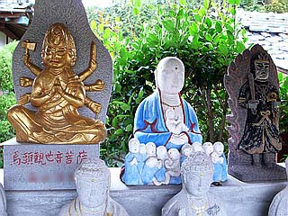
そんな中、境内には等身大サイズの不動サマも。
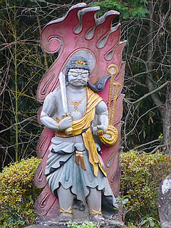 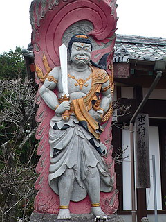
↑この方あたりを巨大化させた方がインパクト大だったと思うんですけどねえ…
境内を一歩出れば目の前は普賢岳。
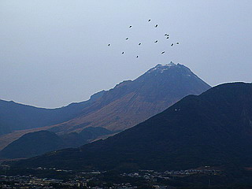
（イメージ）
まるでこちらに覆いかぶさってきそうだ。
一方、境内に目をやれば不動サマが覆いかぶさってきそう。
前門の虎、後門の龍とはこれいかに。
2007.12.
珍寺大道場 HOME